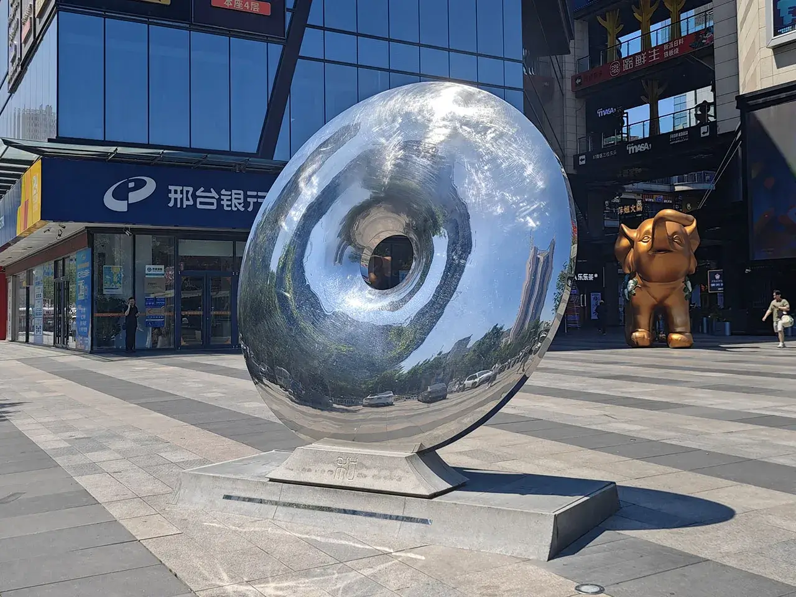
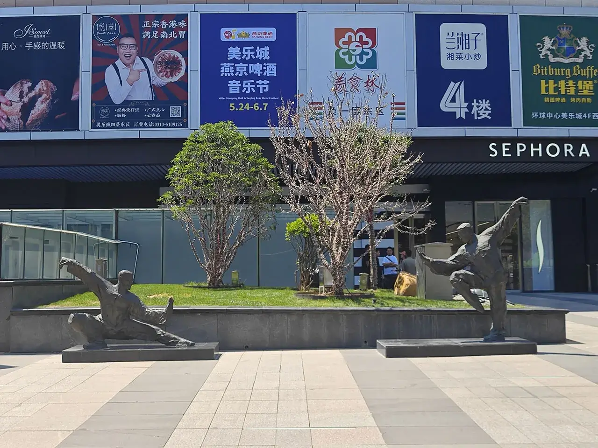
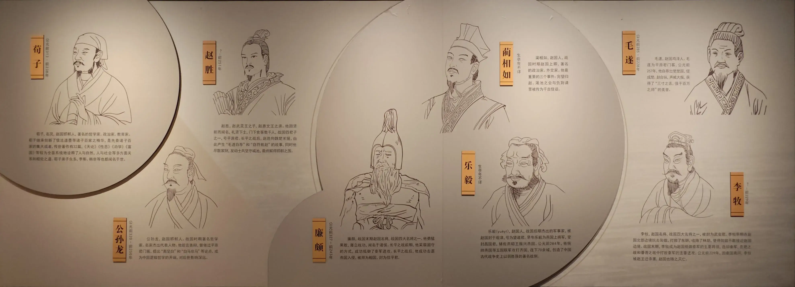
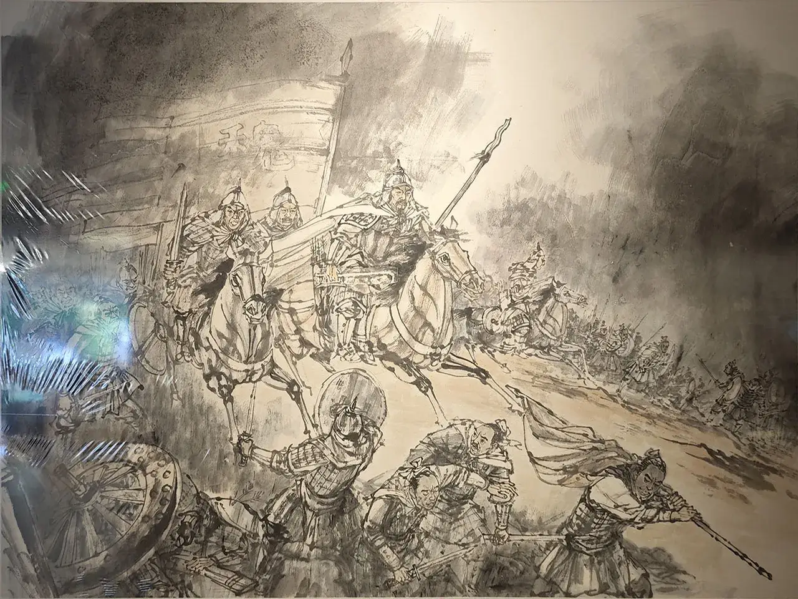
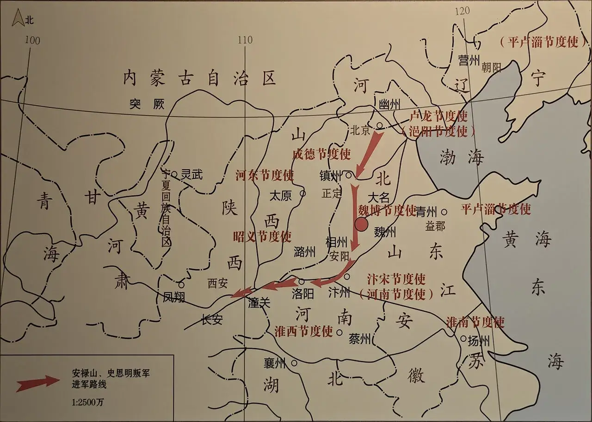

前言
距离离开北方没有多少日子了，抓紧时间多玩一些地方吧，以后估计没啥机会了🤔。
这是偷跑去邯郸的流水账！
正文
5.24
07:17 河北保定
购买车票：G6271 08:01 保定东-09:25 邯郸东，￥145。明明没比去北京久多少却贵了这么多🤧。
09:28 河北邯郸
邯郸东站门口也有一个雕塑，但是我并不知道是什么意思。
在去民宿的路上感觉邯郸的城建比保定要好🤔。
10:47 美乐城🤩
从民宿出来东西一扔出门，第一天先逛逛邯郸市里。
美乐城，据说是整个邯郸最繁华的地方。

作为战国里一个强盛大国的国都，这里曾经发生过的故事甚至都在小学课本里学过！
胡服骑射的故事虽然课本里没学过，但是我在《百家讲坛》里听过。

河北打架系列：保定摔跤、沧州武术，邯郸太极🫣。

没啥想吃的，就在河北点了个陕西食物了😇，价格还可以。
12:01 邯郸市博物馆🤩
邯郸市博物馆 & 邯郸大剧院
接下来去邯郸市博物馆，这个馆很早就被评为国家一级博物馆了！刚好这个地方的历史俺都了解过一些，所以基本上都能看懂。
12:08 中央大厅
中央大厅
中央大厅里的青铜马群雕。还有三个铜板壁画，分别代表邯郸的三个重要时期“磁山之光”、“胡服骑射”和“建安风骨”。“胡服骑射”要进门后转过身来才看得到🤧，于是又老瞎眼了没注意。
12:13 “甘丹”风华——邯郸历史文化基本陈列
邯郸西依太行，东跨平原，黄河故道、漳、滏、洺、卫河纵横其间，是人类文明的重要发祥地之一。旧石器时代这里有新桥遗址，新石器时代磁山农业文明初现。商族文化在此起源、发展，战国时代为赵国都城，汉代是著名商业都会。汉末邺城崛起，魏晋南北朝时相继为曹魏、后赵、冉魏、前燕、东魏、北齐国都，兴盛近四百年。隋唐以降，大名藉运河而兴，洺、磁扼形胜滋衍，金戈铁马纷扰历史云烟。宋金元明清，广平、大名路府并立于此，耕读传家，世风敦然。清末铁路贯通，新学渐兴，工矿略显，为近代邯郸复兴之启端。民国时期近代工业行进艰难，民族危机日益逼悬。抗战烽火遍燃冀南，革命老区肇始元元，邯郸儿女为新中国的建立和民族复兴做出了贡献。 勤劳的邯郸人民勇于进取，深厚的文化积累，是今天我们建设富强、文明、美丽区域中心城市新邯郸的动力源泉。
真是太有历史了！
12:12 石破天惊——远古时期邯郸的开拓
邯郸境内自古就有古人类的活动。在由旧石器时代向新石器时代的缓慢过渡中、邯郸的新桥旧石器文化遗址为河北南部最早的文化源头，距八千年左右的磁山文化，则成为新石器文化的一个杰出代表。仰韶文化时期的后冈一期文化和大司空文化百家村类型，龙山文化时期的后冈期文化涧沟遗址等地层叠压清晰。进人国家阶段后，邯郸的先商文化遗迹遍布西都山区丘陵地带、商、周文化遗址星罗棋布，揭示了邯郸文化厚重有序的文化渊源。

先商时期
好像哪个地方一开始都要展示些这样的瓶瓶罐罐。
12:19 漳水商迹——夏商周时期邯郸的兴起
夏、商、西周时期是中国古代早期国家形态的形成和初步发展阶段。漳河时期、漳河流域商族文化兴起；商朝简历，盘庚迁都于殷后，邯郸是殷商的王畿之地；西周时期，随着分封制的推行，邯郸地区的区域文化逐步发展兴盛起来。

殷商系列
这里离殷墟很近，但是我觉得这里的青铜器质量一般般🤔。
12:23 跻身七雄——春秋战国时期邯郸的辉煌
三家分晋赵国建立后，邯郸逐渐发展成为赵国逐鹿中原的门户。赵敬侯迁都邯郸后，对邯郸的营建，使其成为战国时期的王城典范。随着赵武灵王胡服骑射的改革。经济、商业、文化的繁荣，赵国跻身战空国七雄，造就了邯郸春秋战国时期的辉煌。
赵都！
赵敬侯（?——公元前 375 年），赢姓，赵氏，名章，战国时期赵国国君，公元前 386 年至公元前 375 年在位。公元前 386 年，他将都城迁到邯郸，开创了邯郸战国时期 158 年的赵都历史。
为了便于领土扩张，赵王将国都迁移至山河四省省会的兵家必争之地邯郸了😬。
胡服骑射！
作为赵国的一大高光时刻！赵武灵王生得威风，死得窝囊😇。
领土变更！
胡服骑射后，赵国领土大为扩张，邯郸一度成为中国最发达的城市！
赵王城遗址系列
前一段时间，蒙曼老师来过邯郸做了解说。说这个青铜马非常厉害，比马踏飞燕还早了 400 多年😇。

看得出赵国是出国很多名人和故事的地方。
12:36 天下名都——秦汉时期邯郸的繁荣
秦始皇统一六国后在邯郸设立邯郸郡，邯郸军事地位明显，秦末争战中屡有体现。到了汉代，依托便利的交通和丰富的物产资源，邯郸延续了王国都会的地位，位居五都之一，前后繁荣达 400 余年。
陶俑系列
凤鸟形青铜灯
跟国博里一个山西的灯特别像。
刻度天禄架铜熨斗
这个熨斗带刻度，因此成为镇馆之宝！
东汉金银涂乘舆大爵酒樽、承盘
第一次见如此样式的酒樽，亦是镇馆之宝！
12:44 邺城宫阙——魏晋北朝时期邯郸的动荡
汉末土地兼并严重，战乱严重，邯郸作为传统的经济中心，遭到严重破坏，一代名都走向衰落。与此同时，南部的邺城开始崛起，曹魏时期更是在邺都大规模营建宫室，其后十六国时期的后赵、冉魏、前燕以及北朝的东魏、北齐都定都于此，邺城作为六朝都城，成为当时北方重要的政治、经济、文化中心。
东汉末年分三国，邯郸城被夷为平地，尽管目前位于邯郸境内的邺城作为六朝古都，但也是处于乱战之中，河北人要遭老罪咯😭。
邺下七子：徐干、陈琳、刘桢、曹植、王粲、阮瑀、应场
三台是邺城的象征，也是历史上著名的楼台亭树代表，设计者是伟大的政治家军事家文学家曹操。三台包括金凤台（南）、铜雀台（中）、冰井台（北），分别高十余丈，各相距六十步，之间以阁道相连。建于 208 年到 218 年。其中最早建成的铜雀台，于 210 年举行了规模浩大的庆典。 三台位于邺城的西北角，城外即是绕城而流的漳河。城内台下，有著名的铜爵园。园内的玄武池，池水即是通过三台下面的暗道，由城外的漳河引来，并顺着城内的沟渠，蜿蜒出东城。
曹老板看中了邺城！但邺城自从被拆后就再也没兴建起来，目前还处于邯郸和安阳交界的尴尬位置。
照理讲三国题材是一个热度很高的话题，然而邯郸文旅似乎并没有怎么重视它🤧，而且从邯郸去邺城的交通实在是太差了！

五胡十六国系列
曹魏时期真没啥文物还没五胡十六国的时候多🤧，这是为什么呢？
在幽州兴起以前，邺城一直处于华北重镇的位置。

公元 352 年，前燕大将慕容彪攻陷常山，冉闵率冉魏军队与前燕将领慕容恪大战，兵败被俘，同年被杀，谥号武悼天王。
这个时候河北几乎瘫痪了😵。
磁县湾漳北朝壁画墓
磁县挖出了一个北朝年间的墓，根据墓中文物的规模（癫狂）程度来看，专家认为是北齐文宣帝高洋的墓！
这个墓中的文物俺在河北省博物院和中国考古博物馆里都看到了😇！
尽管北齐又短又癫，但它留下来的文物古迹还真不少的😬。
12:55 洺魏雄风——隋唐五代时期邯郸的发展
随着隋代运河的开凿，隋唐时魏州、洺州、磁州并起。隋木窦建德起义称夏王，唐初刘黑闼起义称河东王，都曾定都于洺州。唐代魏州大名城崛起为河北道治所，魏博节度使要地，五代后唐、后晋、后周的陪都。洺、魏两州雄踞河朔，均为藩镇割据重镇。
唐三彩系列

令大唐头大的河北地区。揍一顿长安后河北就不用交税了🥳。
节度使系列
蒙曼老师说这个石碑是节度使的墓碑，表示着节度使在晚唐中的权力已经大到差不多是一个土皇帝了。不过在这里它是个复制品。
13:00 中原风云——宋辽金元时期邯郸的变迁
宋金元时期是邯郸历史上的一个特殊时代。北宋乘绪五代，却又面临着北方契丹（辽）的不断侵浸。为此北宋特将大名府升为北京，使之成为保卫东京的重要屏障。崛起于白山黑水间的金朝灭辽攻宋，同宋展开了近百年的对峙。蒙元时期，邯郸处在中书省直辖的“腹里”地区，对元代的政治、经济、文化产生重大影响。
最早叫北京的城市诞生了！

磁州窑系列
宋元时期贸易发达，因此瓷器很受欢迎。磁窑总是黑白分明的。

岳飞与磁州
岳家军到此一游。
13:08 畿南胜郡——明清时期邯郸的复苏
明清时期，境内设有广平府、大名府、明代归属京师，清代同属直隶。邯郸的中心是广平府，辖永年、广平、曲周、肥乡、鸡泽、邯郸、成安、威县、清河，磁州。除威县、清河外，均属今境。明清两代，除了两次大的朝代更迭带来的战争外，邯郸一代长期处于较为稳定的社会环境中，水利航运、商贸和手工业的发展以及新的农业物种的传入，带来经济持续缓慢地上升，人口得到较大的增长，乡村士绅与官宦家族对基层社会管理发挥着重要影响。
大明大清
跟之前正定府管辖石家庄一样，当时邯郸是属于广平府的（怪不得跟正定古城一样还有个广府古城）🤔。
现在的武灵丛台是明朝的时候重修的，明清时的邯郸城还没有赵国的时候大！
不知道是不是逛到后面注意力下降的缘故，还是人们总是觉得越古老的东西越有价值，我总觉得明清时代这里跟河南博物院一样好像都没啥牛逼的文物展出🫥。
13:16 黎明曙光——民国时期邯郸的洗礼
近代系列
晋冀鲁豫边区，是中国抗日战争中，中国共产党领导的敌后抗日根据地之一。1937 年 10 月，八路军一二九师开始在山西省太行山和太岳山区建立。1938 年 4 月，扩建为晋冀豫根据地，驻河北省涉县，后迁至邯郸市。
老山河四省省会了😬。邯郸集齐了山西的挖煤，河南的种地，山东的种菜还有河北的炼钢。
13:23 邯郸古代石刻艺术陈列

阿弥陀佛系列
北朝/唐末五代时期，河北邯郸人老惨了，于是他们就开始雕刻佛像以求获得解脱😭！
3D 打印系列
复刻的响堂山石窟！非常美丽，就是太整齐了没有什么历史沧桑感😇。
红砂石笑面罗汉头像——常乐寺遗址出土
笑得很憨厚~
13:33 中国历代钱币陈列

钱币系列
🤑🤑🤑
13:44 磁州窑瓷器系列

磁州窑系列
查了下磁窑还不属于五大名窑里，不如喃们河北保定的定窑😭~
14:21 丛台公园🤩
赵武灵王
下一站是坐公交车去丛台公园。邯郸市区看着挺漂亮的但是感觉有点小了，稍微走一点点就到头了。
赵武灵王居然叫赵雍不叫嬴雍？查了下先秦时期男子称氏不称姓，故当称为赵雍，不叫嬴雍。那为啥秦始皇又叫嬴政呢。
啊！河北邯郸！今天没有雾霾😭！
14:30 花体字
查了下这个花体上的东西：
- 邯：
- 学步桥（之后去）
- 邯郸大剧院（已去）
- 胡服骑射雕像（这个造型的没去）
- 武安舍利塔（太远了，不去）
- 回车巷（之后去）
- 郸：
- 武灵丛台（就在这呢）
- 弘济桥（博物馆看了个模型）
- 蜗皇宫（想去，太远了）
- 东汉金银涂乘舆大爵酒樽、承盘（已看）
随便一个东西都是整个福建拿不出来的😇。
14:34 梅开二度
唐代肃宗年间，中原地区某地有一俏丽女子，名唤陈杏元。她家院里种着一株梅花树，时当花期，正喷香吐艳。忽一日，无缘无故，那梅花树的枝儿蔫了，花儿落了。
何故无风无雨花自残，陈杏元大惑不解。也在这一日，陈杏元在朝做官的父亲差人送来一位书童。这书童，聪明伶俐，才貌超人。后来得知，书童原是梅良玉，梅良玉父亲被奸臣陷害，他侥幸被人救出并送到其父好友陈日升家中寄居。陈视梅良玉如同己出，常带他在花园的梅树边拜祭故友。梅良玉不辜负厚爱，发誓要苦读诗书，决心考取功名，出人头地，将来好为父亲报仇。
这不禁使陈杏元内心里萌生了一种难以名状的感情，不久后，陈杏元与梅良玉相爱日久生情，谁知好景不长，他俩尚未成婚，北国南侵，唐王难以抵挡，就派美人去应付，选陈杏元到北国去和番。那时的邯郸是边陲重镇，凡到番邦去的人，一般都要登临邯郸的丛台，与亲人洒泪相别。这样，陈杏元与梅良玉便也来到丛台之上。
陈杏元泪别梅良玉，一步一回头，悲悲切切地走在通往番邦的路上。快要到达番邦时，路经一处悬崖断壁，此处正是汉朝与番邦和亲、到头来忧郁而死的美女王昭君的庙宇。痛不欲生的陈杏元要跳崖自尽，危机之时，成仙的昭君救起陈杏元并把她送回中原陈家，最终让她与梅良玉又成好事，喜结良缘。
陈杏元与梅良玉的真情感动了陈家院中的梅花树，就在梅陈完婚之日，那梅花树竟然又二度重开，且花朵满枝，艳丽无比，馨香四溢。
球又进了！这个成语居然出自在非战国时期的邯郸。
14:36 武灵丛台
上丛台
武灵丛台入口处有个售票处，现在没了，白嫖之。
河北邯郸的几个公园都不要钱，河北保定要不要学着点？
14:42 赵武灵王
赵武灵王
赵武灵王英明神武，胡服骑射伐灭中山，狠狠胖揍了保定定州！
14:59 学习成语
成语之都，简称成都
在小时候都学过了🤔。
不过胡服骑射真的算是一个成语吗？
15:08 秦始皇出生地纪念馆
在赵武灵王下的丛台公园放这玩意是不又有点地狱笑话了😅。胡服骑射距离长平之战也就四十来年，其实也没多久😇。
据专家考察，秦始皇就出生在武灵丛台附近。
15:27 天鹅
环境不错哦！
15:36 七贤祠

七贤祠，位于河北省邯郸市丛台区丛台公园内武灵丛台北侧，是为纪念七贤韩厥、程婴、公孙杵臼、蔺相如、廉颇、李牧、赵奢而建的祠堂，始建于明朝万历年间。
15:39 碑林系列
各种石碑
古汉字字右到左自上而下看起来真是太不舒服了！撤！
16:12 学步桥🤩


学步桥系列
丛台公园离学步桥挺近的，走过去就行。这个桥是个明代时期的桥，取名借用了邯郸学步的典故。
16:22 炒酸奶
两个人点了份炒酸奶。在学校见过一直没去吃。量太大了，吃不完🤧。
16:52 赵苑公园🤩
又见和氏璧
骑共享单车至赵苑公园！
又见胡服骑射
这个公园还是挺大的，从北到南随便走走吧。中间还有个汉墓遗址。
感觉这个公园有点同质化了。
撤！
公交车不太好弄，打个车去回车巷吧！￥7.04。
17:48 回车巷-邯郸道🤩
老三坊七巷了😵。据说还是政府近两年翻新的。
17:49 黄金楼
金碧辉煌的首饰店，排起了长队。
- 邯
- 武灵丛台（去了）
- 响堂山石窟（明天去）
- 市花月季（跟北京保定一样）
- 黄粱梦吕仙祠（太远，不去）
- 蜗皇宫（想去，太远了，give up）
- 磁窑（看了）
- 郸
- 学步桥（去了）
- 赵苑公园（去了）
- 广府古城（不感兴趣，下次一定）
- 邯郸大剧院（去了）
- 胡服骑射雕像（贴地射的没看过）
17:59 镇馆之宝
看来这个人头还挺有人气的。
18:03 慈禧行宫
慈禧在邯郸的行宫。
18:06 邯郸道 新个崭崭

我猜那个“照”是河南话“中”的意思。
18:15 古城
仿古城墙
买了个上海拇指包，￥10 还是￥15 忘了。因为明天得出个远门，又去旁边的超市补充一下物资，撤！
蔺相如让廉颇处没看到，算了，估计也是随便找个地方杜撰的。